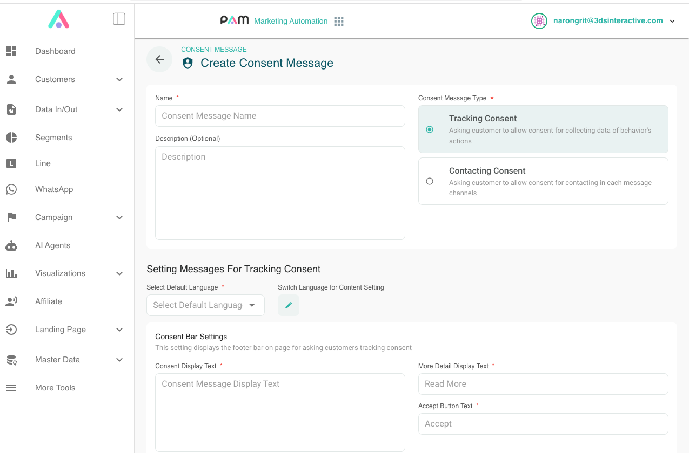

การจัดการความยินยอม (Consent)
ตั้งค่าข้อความขอความยินยอมได้ใน PAM Admin Console ที่เมนู More Tools > Consent Message โดยเลือกประเภทให้ตรงกับวัตถุประสงค์การใช้งาน

ประเภทของ Consent
Tracking Consent
ใช้กำหนดความยินยอมสำหรับการติดตามกิจกรรมของผู้ใช้ และใช้ประกอบการควบคุมการส่ง event tracking โดยนำรหัสข้อความนี้ไปตั้งค่าเป็น trackingConsentMessageID ใน ขั้นตอนที่ 2: เตรียม Config
หากผู้ใช้ยังไม่ได้ยอมรับ Tracking Consent การส่ง event ในขั้นตอนถัดไปจะไม่สามารถบันทึกกิจกรรมของผู้ใช้คนนี้ได้ จึงควรดำเนินการขอความยินยอมก่อนเริ่มส่ง event
หากการติดตามกิจกรรมใช้ฐานความยินยอม แอปต้องขอความยินยอมจากผู้ใช้ก่อนเริ่มดำเนินการตามวัตถุประสงค์นั้น เพื่อให้สอดคล้องกับพระราชบัญญัติคุ้มครองข้อมูลส่วนบุคคล (PDPA) ดู แนวทางการขอความยินยอม
Contacting Consent
ใช้ระบุว่าผู้ใช้อนุญาตให้ติดต่อหรือส่งข้อความผ่านช่องทางใดบ้าง มีผลต่อการส่งแคมเปญในเมนู Campaign โดยแยกจากความยินยอมในการติดตามกิจกรรม
ตรวจสอบสถานะความยินยอม
หลังเริ่มต้น SDK แล้ว เรียก Pam.loadConsentStatus() พร้อมรหัสข้อความขอความยินยอมที่ต้องการตรวจสอบ:
final userConsent = await Pam.loadConsentStatus('CONSENT-MESSAGE-ID');
หาก userConsent.needConsentReview เป็น true แอปต้องแสดงข้อความเพื่อให้ผู้ใช้ทบทวนและตัดสินใจให้ความยินยอม
ทดลองกดปุ่มของ Consent API ทั้งแบบใหม่และเดิมได้ใน แอปตัวอย่างพร้อมปุ่มทดสอบ API
หน้าจอ Consent สำเร็จรูป
ใช้ Pam.showConsent() เพื่อเปิดหน้าจอกลางของ SDK โดยไม่ต้องสร้าง UI หรือโหลดข้อมูลเอง รองรับทั้ง Tracking และ Contacting Consent โดยเลือกประเภทจาก consent_message_type ที่ server ส่งมา
import 'package:flutter/material.dart';
import 'package:pam_flutter/pam.dart';
// เรียกหลังเริ่มต้น SDK และเมื่อหน้าจอของแอปพร้อมใช้งานแล้ว
FilledButton(
onPressed: () async {
final result = await Pam.showConsent(
context,
messageId: 'CONSENT-MESSAGE-ID',
);
if (!context.mounted) return;
if (result.outcome == PamConsentOutcome.saved) {
ScaffoldMessenger.of(context).showSnackBar(
SnackBar(content: Text('บันทึกแล้ว: ${result.submission!.consentID}')),
);
}
},
child: const Text('ตั้งค่าความเป็นส่วนตัว'),
)
ใช้ภายในแอปที่มี MaterialApp และ Navigator และเปิดใช้ Material Icons ใน pubspec.yaml ของแอป:
flutter:
uses-material-design: true
ส่ง BuildContext ของหน้าจอในแอป หากต้องการเปิดเมื่อเข้าหน้า ให้เรียกหลัง frame แรก ไม่เรียกตรง ๆ ระหว่าง build() SDK อนุญาตให้เปิด Consent ได้ครั้งละหนึ่งหน้าจอ หากเรียกซ้ำขณะหน้าจอเดิมยังเปิดอยู่จะเกิด StateError
การโหลดข้อมูลและค่าเริ่มต้น
หน้าจอจะแสดงสถานะกำลังโหลด แล้วดำเนินการดังนี้:
- ตรวจหา
contact_idปัจจุบัน หากไม่มีจะข้ามการโหลด status และถือว่ายังไม่เคยยอมรับ - หากมี contact จะโหลดสถานะเดิมด้วยระบบเดียวกับ
Pam.loadConsentStatus()หากได้ 404, HTTP error อื่น, ข้อมูลไม่ถูกต้อง หรือ request ล้มเหลว จะเริ่มตัวเลือกใหม่ - โหลดข้อความ ภาษา สี และรายการที่เปิดใช้งานด้วยระบบเดียวกับ
Pam.loadConsentMessage()รองรับทั้ง response เดิมและแบบ{ "data": { ... } } - ใช้สถานะเดิมเมื่อรหัสข้อความ ประเภท และ contact ตรงกัน หากไม่ตรงกันจะเริ่มตัวเลือกใหม่ ตัวเลือกเสริมครั้งแรกเป็นปิดทั้งหมด
ข้อผิดพลาดตอนโหลด status ไม่ได้ปิดสิทธิ์ tracking เดิมหรือส่ง Consent อัตโนมัติ ส่วนข้อผิดพลาดตอนโหลดข้อความจะแสดงปุ่ม “ลองใหม่” และไม่อนุญาตให้บันทึกจนกว่าจะโหลดรายละเอียดสำเร็จ
รายการบังคับและตัวเลือกเสริม
- Terms & Conditions และ Privacy Overview แสดงเป็นเปิดอยู่พร้อมข้อความ “จำเป็น · เปิดใช้งานเสมอ” และกดปิดไม่ได้ทั้งสองประเภท
- Necessary Cookies เป็นรายการบังคับเฉพาะ Tracking Consent และกดปิดไม่ได้เช่นกัน
- รายการบังคับจะแสดงเสมอตามกติกาของ SDK แม้ไม่มีในรายละเอียดที่เปิดใช้งาน โดยใช้ชื่อมาตรฐานเมื่อไม่มีคำอธิบายจากหลังบ้าน เพื่อให้เห็นว่ากำลังยืนยันรายการใด
- ตัวเลือกเสริมแสดงตาม
is_enabledและconsent_message_typeจากหลังบ้าน ใช้ switch เพื่อเปิดหรือปิดได้ Tracking แสดงกลุ่ม Cookies ส่วน Contacting แสดง Email, SMS, LINE, Facebook Messenger และ Push Notification แม้ response จะมี key ของอีกประเภทอยู่ด้วยแต่ปิดไว้ ก็จะไม่แสดงข้ามประเภท - ตัวเลือกเสริมที่ซ่อนอยู่จะเก็บค่าเดิมไว้เมื่อโหลด status ได้ หากไม่มีสถานะเดิมจะเป็น
false
หน้ารายการแสดงข้อความย่อจาก brief_description หาก is_full_description_enabled: true และมีข้อความฉบับเต็ม จะมีปุ่ม “อ่านเพิ่มเติม” เมื่อกดจะเปลี่ยนไปแสดง full_description แทนข้อความย่อ รองรับ HTML เช่น หัวข้อ ย่อหน้า ตัวหนา รายการ และลิงก์ และกลับมายังตัวเลือกเดิมได้ หาก flag เป็น false จะไม่เปิดให้อ่านฉบับเต็ม แม้ response จะมี full_description อยู่ก็ตาม ลิงก์ http, https, mailto และ tel เปิดผ่านแอปภายนอก
ภาษาและขนาดหน้าจอ
final result = await Pam.showConsent(
context,
messageId: 'CONSENT-MESSAGE-ID',
locale: const Locale('th'),
);
รองรับภาษาไทย (th), อังกฤษ (en) และญี่ปุ่น (jp ใน response ของ PAM) ทั้งข้อความ Consent และข้อความของ UI โดย server จะส่ง key ของภาษาเฉพาะที่ตั้งค่าไว้ ไม่จำเป็นต้องมีครบสามภาษา SDK ไม่สร้างข้อความ "null" ให้กับภาษาที่ไม่ได้ส่งมา
ภาษาที่เลือกได้อิง available_languages และต้องมีคำแปลที่ไม่ว่างอย่างน้อยหนึ่งข้อความจริงด้วย หากรายการภาษาไม่ได้ส่งมาหรือไม่มีรายการที่ใช้ได้ จะตรวจจากคำแปลที่มีอยู่จริง หากไม่มีข้อความทุกภาษา จะใช้ภาษาไทยสำหรับข้อความมาตรฐานของ UI
- ไม่ส่ง
locale: เลือกภาษาที่รองรับตามลำดับth→en→jpโดยไม่อิงภาษาของแอป ลำดับในavailable_languagesหรือdefault_languageหากข้อความบางรายการไม่มีคำแปลในภาษาที่เลือก จะลองตามลำดับนี้เช่นกัน - ส่ง
localeหรือเลือกภาษาบน UI: ลองภาษาที่เลือกก่อน หากไม่มีข้อความ จะใช้ลำดับth→en→jpเสมอ โดยไม่อิงdefault_languageหรือลำดับใน JSON ทั้งกรณีภาษาไม่รองรับ ไม่ได้ส่ง key มา เป็นnullเป็นข้อความว่าง หรือมีแต่ช่องว่าง
ตัวอย่าง เลือก jp แต่ข้อความนั้นมีเฉพาะ th และ en จะแสดงภาษาไทย หากภาษาไทยไม่มีด้วยจึงแสดงภาษาอังกฤษ กติกานี้ใช้กับชื่อหน้าจอ ข้อความย่อ ฉบับเต็ม และข้อความปุ่ม หากไม่มีข้อความนั้นครบทุกภาษา จะใช้ข้อความมาตรฐานของ UI เมื่อมี หรือไม่แสดงข้อความที่ขาด แทนการแสดง null
เช่น ไม่ส่ง locale และ Consent รองรับครบสามภาษา จะเริ่มด้วยภาษาไทย หากรองรับเฉพาะอังกฤษและญี่ปุ่น จะเริ่มด้วยภาษาอังกฤษ ผู้ใช้ยังเปลี่ยนภาษาเองจากเมนูบนหน้าจอได้
Flutter ใช้รหัสภาษาญี่ปุ่น ja ขณะที่ PAM ใช้ key jp SDK แปลงให้โดยอัตโนมัติ:
await Pam.showConsent(
context,
messageId: 'CONSENT-MESSAGE-ID',
locale: const Locale('ja'), // อ่านข้อความจาก key jp
);
หากสร้าง UI เอง LocalizeText มี en, th, jp ซึ่งเป็น null ได้เมื่อไม่มีคำแปล และเพิ่ม Lang.jp สำหรับ get() โดยยังใช้ constructor สอง argument แบบเดิมได้
หากมีมากกว่าหนึ่งภาษาจะมีตัวเลือกภาษาในหน้าจอ การสลับภาษาจะเปลี่ยนข้อความทันที รวมถึงรายละเอียด HTML โดยไม่โหลดข้อมูลใหม่และไม่ล้างค่าที่เลือกไว้
หน้าจอที่กว้างน้อยกว่า 600 logical pixels ใช้รูปแบบเต็มหน้าจอ ส่วนพื้นที่กว้างกว่านั้นใช้กล่องกลางจอกว้างไม่เกิน 600 logical pixels เนื้อหาเลื่อนได้และรองรับการขยายตัวอักษร หากพื้นที่แนวตั้งน้อย ส่วนหัวและส่วนปุ่มสามารถเลื่อนได้ด้วย การหมุนหน้าจอหรือเปลี่ยนขนาดไม่ล้างตัวเลือก
สีหลัก สีรอง สีข้อความ และสีข้อความบนปุ่มใช้ style_configuration.consent_detail โดยมีสีสำรองเมื่อค่าจากหลังบ้านไม่ถูกต้อง popup_main_icon: "pdpa" หรือ "gdpr" ใช้เลือกไอคอนตกแต่งเท่านั้น ไม่เปลี่ยนเงื่อนไขการยอมรับ
การทบทวน การบันทึก และผลลัพธ์
เมื่อสถานะเดิมระบุ need_consent_review: true หรือเป็นคนละเวอร์ชันกับข้อความที่โหลด หน้าจอจะแจ้งให้ทบทวนและนำตัวเลือกเดิมมาเป็นค่าเริ่มต้น การบันทึกเกิดหลังผู้ใช้กดปุ่มยืนยันเท่านั้น โดยส่ง เลขเวอร์ชันของข้อความที่แสดง ไม่ส่ง latest เพื่อให้ตรงกับรายละเอียดที่ผู้ใช้อ่าน
หาก server ตอบ NEED_CONSENT_REVIEW ขณะบันทึก SDK จะโหลดข้อมูลใหม่และรอให้ผู้ใช้ทบทวนและยืนยันอีกครั้ง หากบันทึกล้มเหลวด้วยเหตุอื่น หน้าจอจะเก็บตัวเลือกไว้และให้ลองบันทึกใหม่ ระหว่างส่งจะปิดการแก้ตัวเลือก ปุ่มปิด และการกดย้อนกลับเพื่อไม่ให้ส่งซ้ำ
PamConsentResult มีผลลัพธ์สองแบบ:
outcome |
ความหมาย | ข้อมูลเพิ่มเติม |
|---|---|---|
PamConsentOutcome.saved |
Server ยืนยันการบันทึกแล้ว | selection และ submission พร้อม consent ID |
PamConsentOutcome.dismissed |
ผู้ใช้ปิดหรือกดย้อนกลับก่อนบันทึก | ไม่มีการส่ง Consent และทั้งสอง field เป็น null |
หากเปลี่ยนผู้ใช้ เปลี่ยน SDK instance หรือเริ่มต้น config ใหม่ระหว่างเปิดหน้าจอ SDK จะป้องกันการส่งตัวเลือกเดิมให้ผู้ใช้ใหม่และให้ปิดแล้วเปิดหน้าจออีกครั้ง
หากต้องการออกแบบ UI เอง ยังใช้ Pam.saveConsent() ตามหัวข้อถัดไปได้ API เดิมทั้งหมดคงอยู่
บันทึกความยินยอมเฉพาะรายการ
ใช้ Pam.saveConsent(consent) หลังผู้ใช้ยืนยันตัวเลือก โดยสร้าง TrackingConsent หรือ ContactingConsent ให้ตรงกับประเภทข้อความใน PAM Admin Console ทั้งสองประเภทใช้เมธอดบันทึกเดียวกัน ไม่ต้องจำ key ของ form fields และไม่จำเป็นต้องโหลด Consent Message ก่อน
import 'package:pam_flutter/pam.dart';
สำหรับการสร้าง UI เอง แอปเป็นผู้แสดงรายละเอียดและรับการยืนยันจากผู้ใช้ก่อนเรียก Pam.saveConsent() หากต้องการใช้หน้าจอสำเร็จรูป ให้ใช้ Pam.showConsent() ตามหัวข้อก่อนหน้า
Tracking Consent: เลือกประเภทการติดตาม
Future<SubmitConsentResult> saveTrackingChoices() async {
// ค่าต้องมาจากตัวเลือกที่ผู้ใช้ยืนยันบนหน้าจอ
const consent = TrackingConsent(
messageId: 'TRACKING-CONSENT-ID',
termsAndConditions: true,
privacyOverview: true,
necessaryCookies: true,
preferencesCookies: true,
analyticsCookies: true,
marketingCookies: false,
socialMediaCookies: false,
);
return Pam.saveConsent(consent);
}
Contacting Consent: เลือกช่องทางการติดต่อ
Future<SubmitConsentResult> saveContactingChoices() async {
const consent = ContactingConsent(
messageId: 'CONTACTING-CONSENT-ID',
termsAndConditions: true,
privacyOverview: true,
email: true,
sms: false,
line: true,
facebookMessenger: false,
pushNotification: false,
);
return Pam.saveConsent(consent);
}
termsAndConditions และ privacyOverview ต้องระบุเองทั้งสองประเภท ส่วน Tracking ต้องระบุ necessaryCookies ด้วย saveConsent() ตรวจว่ารายการบังคับเหล่านี้เป็น true ก่อนส่ง หากไม่ครบจะเกิด ArgumentError โดยไม่ส่ง request และ SDK จะไม่ยอมรับแทนผู้ใช้อัตโนมัติ
ตัวเลือกเสริมที่ไม่ระบุใน constructor เป็น false เช่น ยอมรับเฉพาะ Email เขียนได้ดังนี้:
const consent = ContactingConsent(
messageId: 'CONTACTING-CONSENT-ID',
termsAndConditions: true,
privacyOverview: true,
email: true,
);
await Pam.saveConsent(consent);
SDK ส่งค่าครบทุก permission ของประเภทนั้น รวมรายการที่เป็น false ใช้ constructor สำหรับการยืนยันตัวเลือกทั้งชุด หากต้องการแก้บางรายการโดยรักษาค่าเดิม ให้ใช้ fromStatus() และ copyWith()
แสดงสถานะเดิมและแก้ไขบางรายการ
final status = await Pam.loadConsentStatus('CONTACTING-CONSENT-ID');
final current = ContactingConsent.fromStatus(status);
// แสดง UI โดยใช้ current.email, current.sms, current.line ฯลฯ
// เมื่อผู้ใช้เปิด SMS เพิ่มแล้วกดบันทึก:
final updated = current.copyWith(sms: true);
final result = await Pam.saveConsent(updated);
copyWith() สร้างออบเจ็กต์ใหม่ ไม่แก้ต้นฉบับ และเก็บค่าที่ไม่ระบุไว้ตามเดิม รวมถึง messageId และ version หากผู้ใช้ยกเลิก SMS ใช้ copyWith(sms: false) ได้ ค่า false ที่ระบุจะไม่ถูกแทนด้วยค่าเดิม
Tracking Consent ใช้รูปแบบเดียวกัน:
final status = await Pam.loadConsentStatus('TRACKING-CONSENT-ID');
final current = TrackingConsent.fromStatus(status);
// หลังผู้ใช้ยืนยันการปิด Marketing Cookies:
await Pam.saveConsent(current.copyWith(marketingCookies: false));
fromStatus() ตรวจสอบข้อมูลก่อนนำมาใช้:
- หากมี error, ไม่มีรหัส consent record/ข้อความ/ผู้ใช้ หรือไม่มี permission ของประเภทนั้น จะเกิด
StateErrorให้โหลดใหม่หรือเข้าสู่ขั้นตอนขอความยินยอมครั้งแรก - หากประเภทไม่ตรงกัน เช่น สร้าง
TrackingConsentจากสถานะ Contacting จะเกิดArgumentError - หาก
needConsentReviewเป็นtrueจะเกิดConsentReviewRequiredExceptionให้แสดงรายละเอียดเพื่อให้ผู้ใช้ยืนยันตัวเลือกใหม่ แล้วสร้าง Consent จากตัวเลือกที่ยืนยัน ไม่ควรข้ามโดยเปลี่ยน flag เอง - ตัวเลือกจากสถานะเดิมผูกกับ contact นั้น หากเปลี่ยนผู้ใช้ก่อนบันทึกจะเกิด
StateErrorให้โหลดสถานะของผู้ใช้ปัจจุบันอีกครั้ง
เวอร์ชันและฐานข้อมูล
constructor และ fromStatus() ใช้ ConsentVersion.latest เป็นค่าเริ่มต้น ส่ง _version: "latest" โดยไม่ใช้เลขเวอร์ชันเก่าจากสถานะเดิมอัตโนมัติ หากจำเป็นต้องระบุเวอร์ชันเอง ให้ใช้จำนวนเต็มบวก:
final consent = ContactingConsent(
messageId: 'CONTACTING-CONSENT-ID',
version: const ConsentVersion.number(3),
termsAndConditions: true,
privacyOverview: true,
email: true,
);
final latest = consent.copyWith(version: ConsentVersion.latest);
สามารถนำเลข version จาก Pam.loadConsentMessage() มาใช้เมื่อจำเป็นต้องบันทึกให้ตรงกับข้อความที่แสดง ผู้ใช้ต้องอ่านและยืนยันรายละเอียดของเวอร์ชันที่จะบันทึก การใช้ latest ไม่ได้โหลดข้อความใหม่มาแสดงหรือยืนยันแทนผู้ใช้ และเวอร์ชันบน server อาจเปลี่ยนระหว่างโหลดสถานะกับบันทึกได้
SDK เลือก _database และผู้ใช้ตามระบบ routing เดิม จึงไม่ต้องระบุเอง แอปต้องใช้ message ID และตัวเลือกให้ตรงกับการตั้งค่า PAM เพราะเมธอดนี้ไม่โหลดการตั้งค่าจาก server มาตรวจล่วงหน้า
หลัง server ยืนยันสำเร็จ หากเป็น Tracking Consent ที่ตรงกับ trackingConsentMessageID ใน config SDK จะอัปเดตสิทธิ์ส่ง event ภายในเครื่องตามค่า preferencesCookies จริง ส่วน Contacting Consent จะไม่เปลี่ยนสิทธิ์ tracking
ผลลัพธ์และข้อผิดพลาด
try {
final result = await Pam.saveConsent(consent);
print('Consent ID: ${result.consentID}');
} on ConsentSaveException catch (error) {
// แสดงข้อความบันทึกไม่สำเร็จ และให้ผู้ใช้ลองใหม่
print('บันทึกไม่สำเร็จ: ${error.code} ${error.message}');
}
เมื่อสำเร็จจะได้ SubmitConsentResult พร้อม consentID และผลรายข้อความใน result หาก server ปฏิเสธหรือส่งข้อมูลไม่สำเร็จจะเกิด ConsentSaveException และไม่อัปเดตสิทธิ์ tracking ภายในเครื่อง หาก response ไม่มี consent ID จะใช้รหัส MISSING_CONSENT_ID ส่วนข้อผิดพลาดของตัวเลือกหรือสถานะให้จัดการตามชนิดที่อธิบายข้างต้น
ขอและบันทึกความยินยอมทุกรายการ (API เดิม)
แอปเป็นผู้แสดงหน้าจอขอความยินยอม เมื่อผู้ใช้ยอมรับแล้วจึงเรียก Pam.allowConsent() เพื่อส่งผลไปยัง PAM เมธอดนี้ไม่ได้แสดงหน้าจอให้ผู้ใช้ และจะยอมรับทุก permission ในข้อความที่ระบุ จึงเหมาะกับหน้าจอที่ให้ผู้ใช้ยอมรับรายการทั้งหมดอย่างชัดเจน
Future<void> requestUserConsent() async {
// แทนด้วยรหัส Tracking Consent หรือ Contacting Consent ที่ต้องการ
const consentMessageId = 'CONSENT-MESSAGE-ID';
final userConsent = await Pam.loadConsentStatus(consentMessageId);
if (userConsent.needConsentReview) {
// ฟังก์ชันของแอป: แสดงรายละเอียดความยินยอมและรอคำตอบ
// คืน true เมื่อผู้ใช้ยอมรับรายการทั้งหมดเท่านั้น
final accepted = await popupConsentAndWaitForResponse();
if (accepted) {
// บันทึกการยอมรับเมื่อผู้ใช้ยืนยันแล้ว
await Pam.allowConsent(consentMessageId);
}
}
}
popupConsentAndWaitForResponse() เป็นฟังก์ชันที่แอปต้องสร้างเอง ไม่ใช่เมธอดของ SDK หากผู้ใช้ไม่ยอมรับหรือปิดหน้าจอ ให้คืน false โดยไม่เรียก Pam.allowConsent()
เมธอดเดิม ได้แก่ Pam.allowConsent(String), Pam.allowAllTrackingConsent(), Pam.allowAllContactingConsent(), Pam.submitConsent(ConsentMessage) และ Pam.submitConsents() ยังคงใช้งานได้โดยไม่ต้องเปลี่ยนโค้ดเดิม